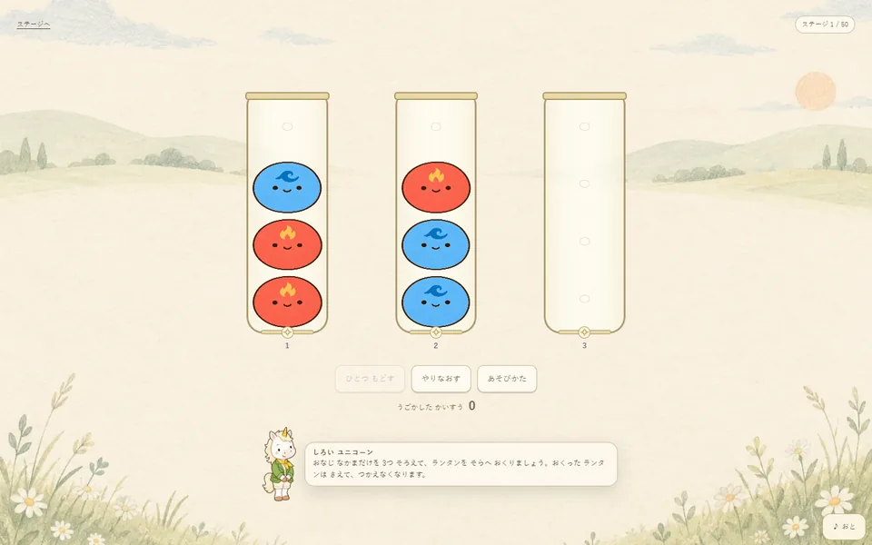

このゲームについて
ランタンに入ったせいれいを別のランタンへ移し、同じ仲間だけの組み合わせを作ります。空き場所をどのように使うか、どの順番で移すかを考えながら、五十のステージに挑戦します。
遊び方
ランタンを押して上にいるせいれいを選び、移したいランタンを押します。同じ仲間を三つそろえるとランタンと一緒に空へ送れます。練習で基本を確かめてから、少しずつ増えるルールに挑戦できます。
ゲーム中に行うこと
- ランタンのせいれいを同じ仲間にそろえる
- 空き場所と移す順番を考える
ここではゲーム中の活動を説明しています。能力の向上や、特定の効果・改善を保証するものではありません。